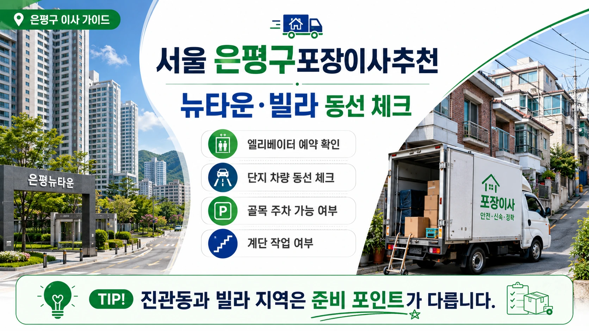

서울 은평구포장이사추천 신도시 단지 비교
은평구 포장이사는
신도시형 대단지와 오래된 주거지,
빌라와 아파트가 함께 있어
동네별 조건을 나누어 봐야 합니다.
진관동은 은평뉴타운 중심의 대단지 아파트가 많고,
불광동과 응암동은 아파트와 빌라가 섞여 있으며,
갈현동은 골목형 주거지와 오래된 건물이 함께 있습니다.

은평구 포장이사 비용은
평수와 짐의 양뿐 아니라
단지 동선,
엘리베이터 예약,
차량 진입 가능 여부,
계단 이동,
사다리차 사용 가능성에 따라 달라질 수 있습니다.
견적을 바꾸는 현장 조건
진관동 대단지 이사는
관리사무소 예약이 중요합니다.
화물 엘리베이터 사용 시간,
차량 대기 위치,
공용공간 보양 기준을 미리 확인해야
작업 당일 지연을 줄일 수 있습니다.
단지 규모가 크면
차량에서 세대까지 이동 거리도 견적에 영향을 줄 수 있습니다.
불광동과 응암동의 빌라나 다세대주택은
골목 폭과 계단 구조를 확인해야 합니다.
차량이 건물 앞까지 들어가지 못하면
장거리 운반이 발생할 수 있고,
계단이 좁으면 대형가전 이동 방식이 달라질 수 있습니다.
업체 비교 전 살펴볼 기준
은평구 포장이사 업체추천을 볼 때는
대단지 아파트와 빌라 작업을 모두 이해하는 업체인지 확인하면 좋습니다.
단지형 이사와 골목형 이사는
작업 순서와 인력 배치가 다릅니다.
포장이사 비교견적은
같은 조건으로 받아야 합니다.
출발지와 도착지의 층수,
엘리베이터 사용 가능 여부,
차량 진입 조건,
사다리차 가능 여부,
가전과 가구 목록을
모든 업체에 동일하게 알려야 합니다.
견적서에는
차량 대수,
작업 인원,
포장 범위,
보양 범위,
분해 조립,
추가비 기준,
파손 보상 기준이 포함되어야 합니다.
금액만 낮은 업체를 선택하기보다
어떤 서비스가 포함되어 있는지 확인하는 것이 중요합니다.
추가비용을 줄이는 준비 방법
은평구는 가족 이사와 소형 이사가 모두 많은 지역입니다.
가족 이사는 책, 의류, 주방용품,
아이 물건이 많아 박스 수가 늘 수 있고,
소형 이사는 주차와 계단 조건이 비용을 바꿀 수 있습니다.
이사 전 불필요한 짐을 정리하면
차량 크기와 작업 시간이 줄어들 수 있습니다.
계약 전에는
일정 변경 조건도 확인해야 합니다.
대단지 이사는 엘리베이터 예약 시간이 중요하고,
빌라 이사는 주차 협의 시간이 중요할 수 있습니다.
은평구 포장이사는
신도시 단지와 골목형 주거지의 기준을 구분해야
실제 현장에 맞는 견적을 받을 수 있습니다.
계약 전에 확인할 세부 항목
은평구 포장이사에서
도착지의 주거 형태를 함께 설명하는 것도 중요합니다.
출발지가 진관동 대단지라 작업이 쉬워도
도착지가 갈현동 빌라라면 계단과 주차가 핵심이 됩니다.
반대로 출발지가 골목 주택이고
도착지가 신축 아파트라면 보양과 엘리베이터 예약이 더 중요해질 수 있습니다.
양쪽 조건을 함께 알려야 비교견적이 현실적으로 나옵니다.
은평구는 지역별 도로 폭과 경사 차이도 있어
차량 진입 사진을 준비하면 상담이 더 정확해집니다.
작은 골목이나 언덕길은 지도만으로 판단하기 어렵기 때문에
건물 입구와 주차 위치를 함께 전달하는 것이 좋습니다.
이런 준비는 추가비용을 줄이는 실질적인 기준이 됩니다.
은평구 포장이사에서는 단지형 이사와 골목형 이사를 구분해야 합니다.
진관동 대단지처럼 관리 규정이 중요한 곳은 예약 시간이 핵심이고,
응암동이나 불광동 일부 빌라 지역은 차량 접근성과 계단 이동이 더 중요합니다.
이 조건을 나누어 설명해야 업체가 실제 작업에 맞는 인원을 배치할 수 있습니다.
이사 전에는 방별 짐의 양을 간단히 적어두면 좋습니다.
책이 많은 방, 주방용품이 많은 집, 베란다 짐이 많은 집은
같은 평수라도 박스 수가 달라질 수 있습니다.
짐의 종류를 미리 알려주면 견적 오차를 줄이는 데 도움이 됩니다.
은평구 포장이사는 이사 날짜 선택도 중요합니다.
대단지 입주 일정이나 월말 수요가 겹치면 원하는 시간대가 빨리 마감될 수 있습니다.
가능하다면 평일과 월중 일정을 함께 문의해보고,
관리사무소 예약 가능 시간과 업체 일정을 동시에 확인하는 것이 좋습니다.
이사 전 동선 확인은 비용 관리에도 도움이 됩니다.
단지 예약과 골목 주차 조건을 함께 확인하면 견적 차이를 더 줄일 수 있습니다.
현장 사진도 함께 준비하면 상담이 더 정확해집니다.
꼭 확인해야 합니다.
자주 묻는 질문
A. 엘리베이터 예약, 차량 대기 위치, 단지 보양 규정을 먼저 확인해야 합니다.
A. 골목 폭, 계단 구조, 대형가전 이동 가능 여부를 확인해야 합니다.
A. 출발지와 도착지 조건을 모두 같은 방식으로 전달해야 정확합니다.